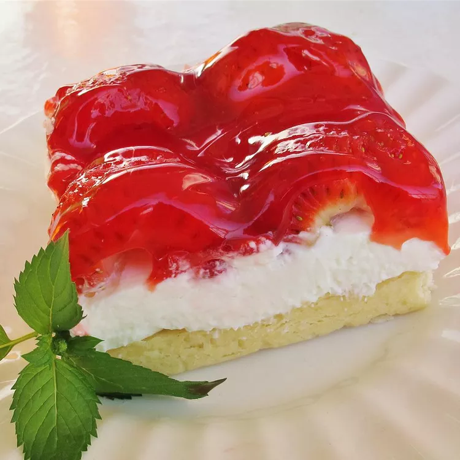

Annie's Strawberry Desert

Description
This strawberry dessert with pecan crust is a delight to eat, featuring a light, sweet cream cheese filling.
Ingredients
- 1 ½ cups all-purpose flour
- 1 cup butter, softened
- 1 cup chopped pecans
- 2 ½ cups confectioners' sugar
- 1 (8 ounce) package cream cheese, softened
- 1 (12 ounce) container frozen whipped topping, thawed
- 1 ½ quarts fresh strawberries, halved
- 1 (8 ounce) jar ready-to-use strawberry glaze
Steps
- Preheat the oven to 350 degrees F (175 degrees C).
- Mix together flour, butter, and pecans in a medium bowl until well combined. Press mixture into a 9x13-inch baking dish.
- Bake in the preheated oven for 10 to 15 minutes; do not allow to brown. Set aside until completely cool, 10 to 15 minutes.
- Mix together confectioners' sugar and cream cheese in a large bowl with an electric mixer until smooth.
Blend in whipped topping until incorporated. Spread over cooled crust, then refrigerate for 8 hours to overnight.
- Top chilled dessert with strawberries and drizzle with glaze to serve.
Home